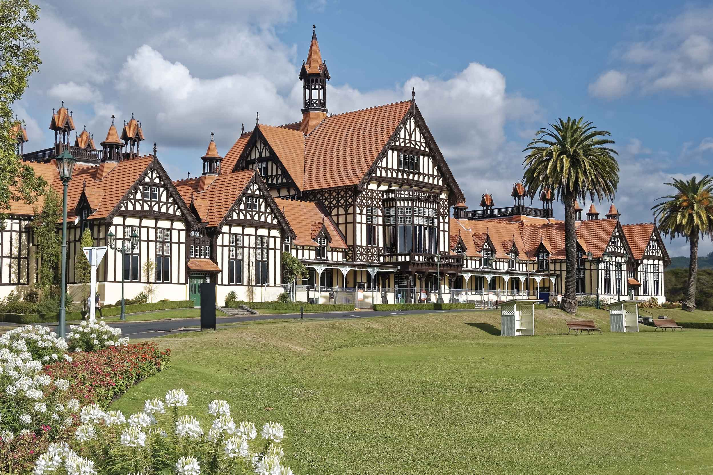

Tudor Towers
Rotorua Tourist Location
A Historic Landmark in Rotorua!
Tudor Towers is a distinctive building located in Rotorua, known for
its unique Tudor-inspired architecture and character. The building
stands out from the surrounding area and provides visitors with an
interesting example of Rotorua's local history and architecture.
Visitors can explore the area around Tudor Towers, take photographs,
and enjoy the surrounding Rotorua attractions. Its location makes it
a convenient stop for people exploring the city and looking for
interesting buildings and local landmarks.
Tudor Towers is a good option for visitors who are interested in
architecture, photography, and discovering some of Rotorua's less
traditional tourist attractions. Visiting the area is also a
relatively low-cost activity, making it suitable for travellers
looking to explore Rotorua without spending a large amount of money.
Facts:
- Located in Rotorua
- Known for its Tudor-inspired architecture
- Interesting location for photography
- Suitable for visitors interested in local architecture
- Can be visited as part of exploring Rotorua
Costs:
- Viewing the exterior: Free
- Photography: Free
- Estimated food costs nearby: $10-$30 per person
- Estimated transport costs: $5-$20 depending on transport
- Total estimated visit cost: $0-$50 per person